Manual Servidores
Inicio
WildFly, conocido antes como JBoss As, o solo JBoss, es un servidor Open Source de aplicaciones Java EE. Es útil para crear, implementar y hospedar aplicaciones y servicios Java. Además, maneja servlets, JSP, EJB y JMS.
Características
-
Rápida puesta en marcha: Permite una rápida puesta de las aplicaciones, arrancando los procesos críticos en paralelo, para eliminar las esperas innecesarias y aprovechar la potencia de los procesadores multi-núcleo. Los servicios no críticos se mantienen congelados hasta su primer uso. Gracias a ello, ofrece una reducción de 10 veces en el tiempo de inicio con respecto a versiones anteriores
-
Escalabilidad: Dispone de un conjunto de herramientas preparadas para atender una gran demanda, donde destaca su servidor web Undertow, capaz de escalar hasta millones de conexiones.
-
Ahorro de memoria: Su gestión de la memoria es capaz de minimizar la asignación de posiciones, evitando la carga de clases duplicadas y objetos, aligerando también los procesos del colector de basura de Java.
-
Motor capaz de configurarse a las necesidades El runtime de Wildfly dispone de una arquitectura donde se pueden añadir o quitar módulos, lo que puede reducir o ampliar sus funcionalidades bajo demanda, ayudando a mantener memoria y espacio en disco ajustado a las necesidades reales.
-
Administración unificada La administración de sus distintos módulos se puede hacer de manera centralizada y amistosa para el usuario. Los distintos subsistemas se pueden configurar desde el mismo fichero de configuración, aunque ya disponen de unos valores por defecto asignados de manera inteligente. Además se dispone de múltiples interfaces para configuración, desde consola, API, HTTP, etc.
Instalación
-
WildFly está escrito en Java, por eso requiere Java JDK para funcionar. Para cumplir este requisito, los usuarios podemos optar por instalar el JDK de Java oficial de Oracle o usar la alternativa de código abierto llamada OpenJDK.
-
Para este ejemplo, vamos a optar por la versión de código abierto de Java, por eso en una terminal (Ctrl+Alt+T) vamos a escribir:
$ sudo apt update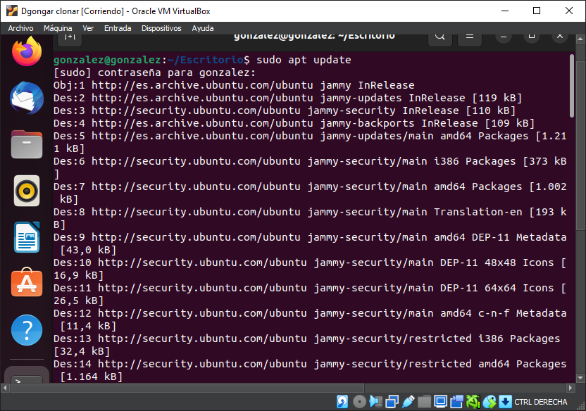 -
Instalamos el JDK de Java por defecto usando el siguiente comando:
$ sudo apt install default-jdk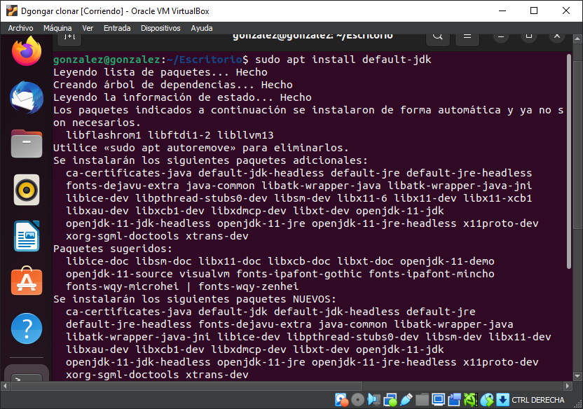 -
Después de instalar OpenJDK, podemos comprobar la instalación escribiendo en la terminal:
$ java -version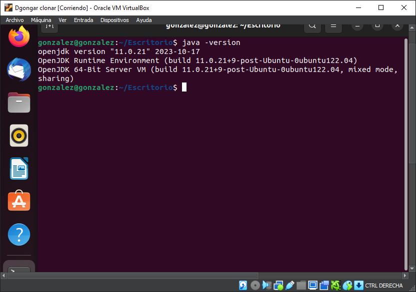Si la terminal te devuelve unas líneas como las de la anterior captura, Java estará instalado y listo.
-
Dado que este es un servidor de aplicaciones, generalmente se recomienda usar una cuenta de servicio dedicada. Ejecuta en la terminal (Ctrl+Alt+T) los siguientes comandos para crear una cuenta de servicio de WildFly para administrar el servidor:
$ sudo groupadd -r wildfly$ sudo useradd -r -g wildfly -d /opt/wildfly -s /sbin/nologin wildfly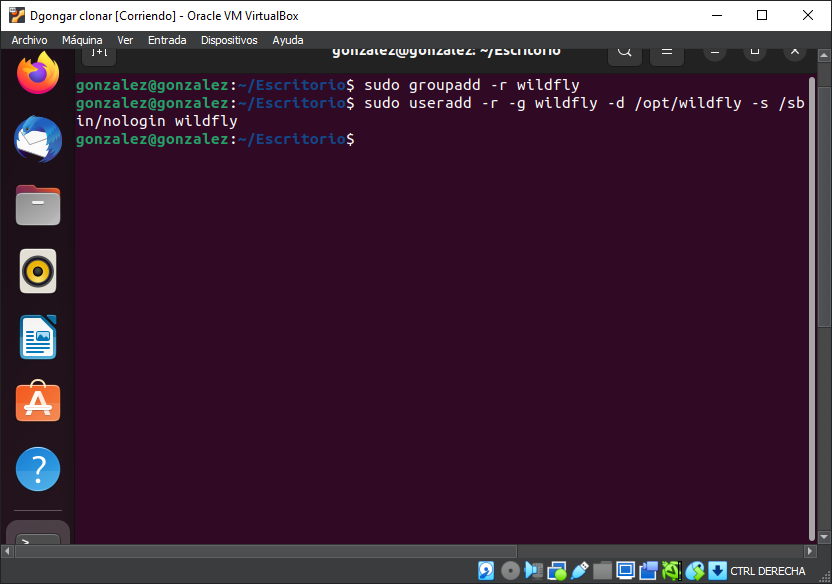Terminado, continuamos con la descarga e instala de WildFly.
-
Terminada la instalación de Java JDK y terminada la creación de una cuenta de servicio para WildFly, ejecutaremos los siguientes comandos para descargar el paquete para WildFly. En este preciso momento, la versión actual es la 16.0.0.Final. La última versión disponible, se puede consultar en su página de descargas. Si abrimos una terminal (Ctrl+Alt+T), podemos utilizar el comando wget para descargar el paquete fácilmente usando los siguientes comandos:
$ cd /tmp$ wget https://download.jboss.org/wildfly/16.0.0.Final/wildfly-16.0.0.Final.tar.gz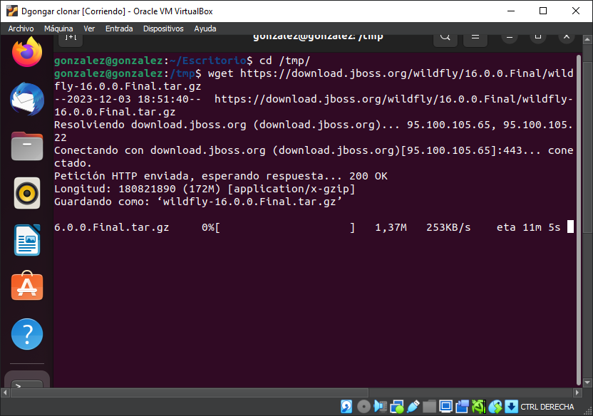Terminada la descarga, tendremos que ejecutar los siguientes comandos para crear la carpeta WildFly en el directorio /opt y para cambiar su propiedad a la cuenta de servicio de WildFly.
$ tar xvf wildfly-16.0.0.Final.tar.gz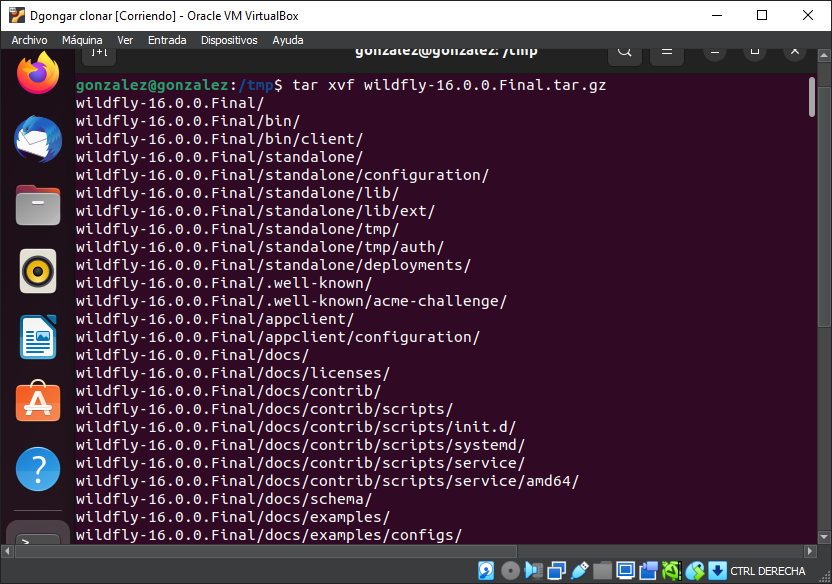$ sudo mv wildfly-16.0.0.Final/ /opt/wildfly$ sudo chown -RH wildfly: /opt/wildfly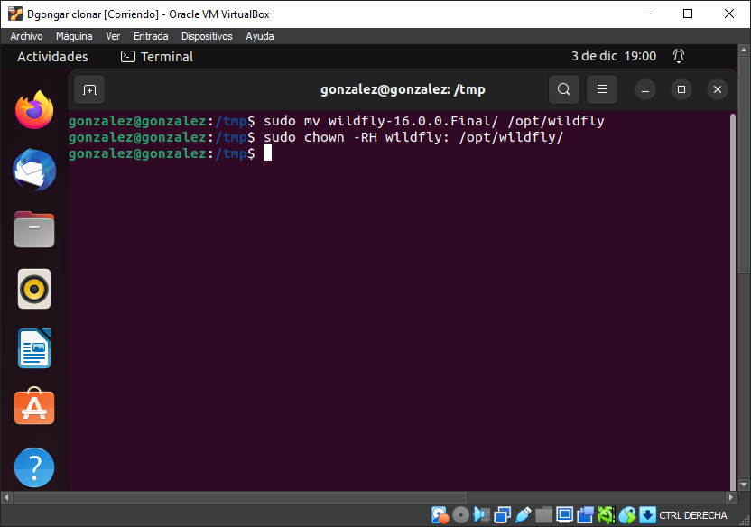 -
Continuamos creando la carpeta de servicio de WildFly en el directorio /etc/ con el siguiente comando:
$ sudo mkdir -p /etc/wildfly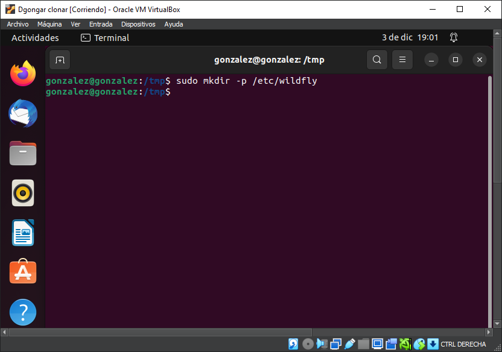Tras crear el directorio, copia los archivos de configuración de WildFly y los ejecutables en el directorio recién creado.
$ sudo cp /opt/wildfly/docs/contrib/scripts/systemd/wildfly.conf /etc/wildfly/$ sudo cp /opt/wildfly/docs/contrib/scripts/systemd/launch.sh /opt/wildfly/bin/
-
También tenemos que hacer que los scripts en el directorio /etc/wildfly/bin sean ejecutables.
$ sudo sh -c 'chmod +x /opt/wildfly/bin/*.sh'En este punto vamos a copiar el archivo systemd al directorio /etc/systemd/system/ ejecutando:
$ sudo cp /opt/wildfly/docs/contrib/scripts/systemd/wildfly.service /etc/systemd/system/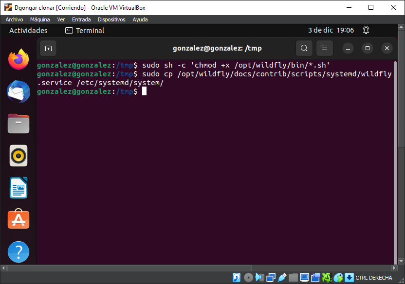 -
Ahora podemos utilizar los siguientes comandos para detener, iniciar y habilitar los servicios de WildFly para que se inicien automáticamente en el momento del arranque:
Primero detenemos el servicio:
$ sudo systemctl stop wildfly.serviceAhora iniciamos el servicio:
$ sudo systemctl start wildfly.serviceY terminamos habilitando el servicio:
$ sudo systemctl enable wildfly.service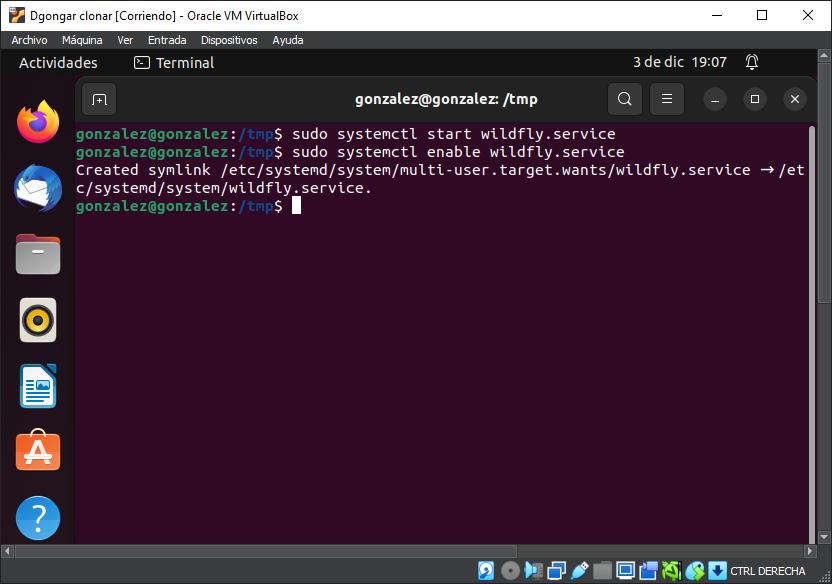 -
Para verificar el inicio, ejecuta el siguiente comando:
$ sudo systemctl status wildfly.service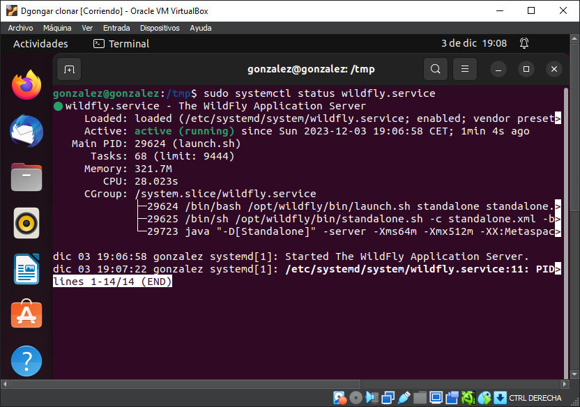 -
Ya podemos abrir el navegador y como URL utilizar el nombre de host o la dirección IP del servidor seguido por el puerto 8080.
localhost:8080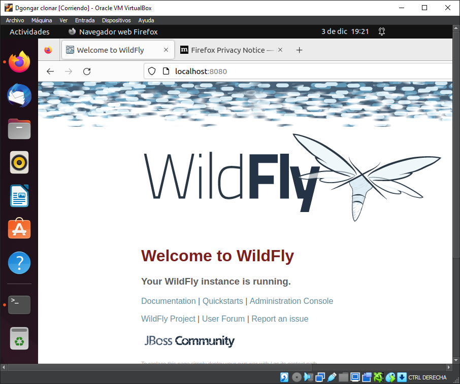